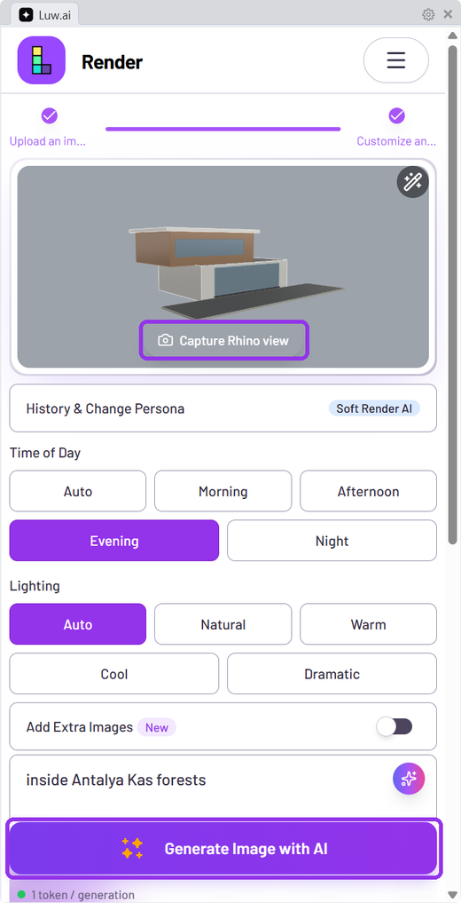
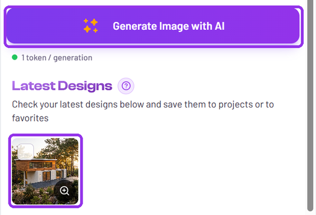
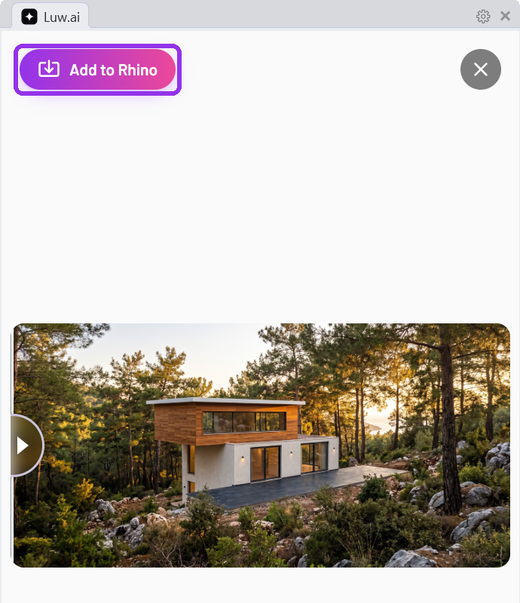
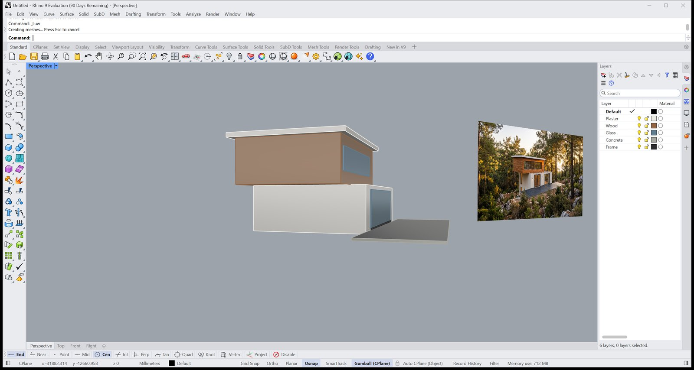
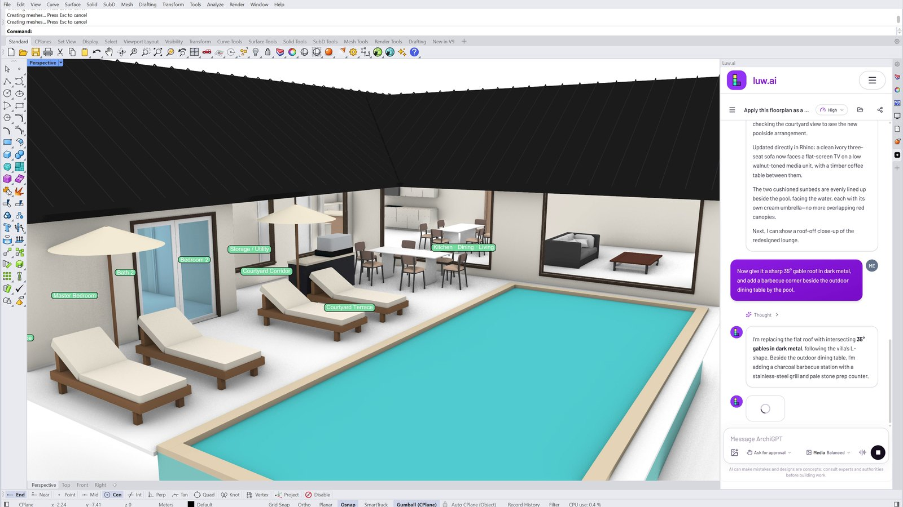
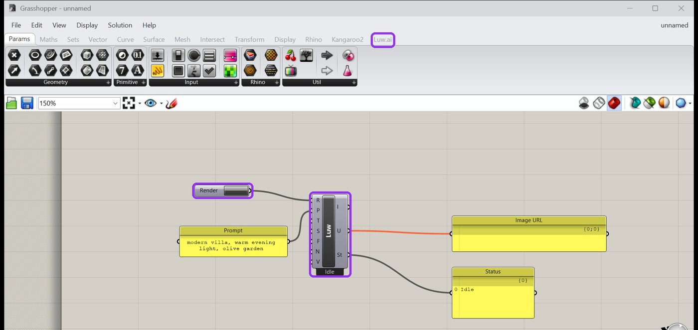
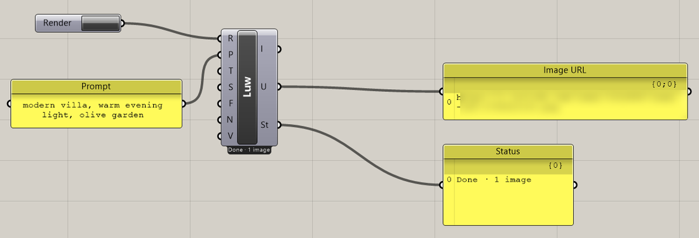
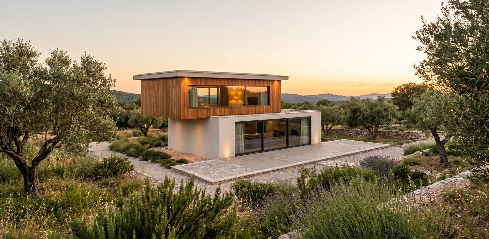

Design a building by talking to ArchiGPT and watch it appear in your Rhino model. Then render it, right inside Rhino. No export, no extra app.
Luw.ai × Archiagent.ai in Rhino: a hand-drawn plan becomes a furnished, textured villa, then a render and two Grasshopper options.
What you need
Rhino 8 or Rhino 9 on Windows. The 90-day evaluation works too.
A Luw.ai account. Each render uses tokens from your account: 1 token for one image.
An internet connection. The renders are made on Luw.ai's servers.
The Luw.ai plug-in:Luw.ai-Rhino-0.1.5.zip. Download it here and unzip it. Inside is the file luw-ai-0.1.5-rh8_0-any.yak.
Install the plug-in
Open Rhino.
Drag the .yak file from your folder and drop it onto the Rhino window. Rhino installs the plug-in.
If Rhino asks you to, restart Rhino.
Didn't work? Close Rhino. In the unzipped folder, right-click install.ps1 and choose Run with PowerShell. Then open Rhino again.
Open Luw.ai and sign in
Type Luw in Rhino's command line and press Enter.
The Luw.ai panel opens next to the Rhino window. It is the Luw.ai web app, made to work with Rhino. You can move it, make it bigger, or drag it into Rhino's panel area to dock it.
First time only: sign in with your Luw.ai account in the panel. Rhino remembers you, so next time the panel opens ready to use.
Get your first render
Set up your view. Rotate, pan and zoom the Perspective viewport until you like the picture. What you see is what Luw.ai renders.
Tip: a Shaded or Rendered display mode with colors or materials gives better renders than Wireframe.
Open Luw.ai (type Luw). The panel opens on Luw.ai's home page. Click Render AI: your Rhino view is already in it. You don't need to save or export anything.

Moved the camera? Click Capture Rhino view on the picture to take the new view.
Choose options if you like: Time of Day, Lighting, or a short Prompt such as “in a pine forest by the sea”. Or leave them on Auto.
Click Generate Image with AI. One image uses 1 token. Your render appears under Latest Designs and is ready in about a minute. Click it to open it.

Click the picture: it opens full size in a window of its own. Close that window, and the panel shows the render: drag the slider to compare it with your model, then click Add to Rhino at the top left.

That's it. The render is now in your model as a picture, next to it. To remove it, press Ctrl+Z once.

Your model and its render, side by side in Rhino.
More tools
Open the menu (☰) at the top of the panel for more tools, such as interiors, exteriors, sketch to render and video. Most tools start with your Rhino view. With 3DGen AI you get a 3D model, and Add to Rhino brings it into your model.
Design a building with ArchiGPT
ArchiGPT is Luw.ai's design assistant. In Rhino it builds what you describe straight into your model, as ordinary Rhino objects on their own layers, while you watch.
Open ArchiGPT from the home page of the Luw.ai panel.
Say what you want. Describe the building, or attach a photo of a plan you drew on paper and write something like “Apply this floorplan as a villa.” ArchiGPT builds it in Rhino: walls, rooms, doors and windows, the kitchen, furniture, a pool.

The villa in Rhino, and the conversation that built it.
Change it by talking. “Give it a 35° gable roof”, “add a barbecue corner by the pool”, “this area needs a TV”. Only what changed is rebuilt. Select something in Rhino first and ArchiGPT knows what “this” means. It knows your own objects too (drawn, imported or copied): “move the wall I drew 2 m east”, “what else is in the model?” Model with it too: “cut a 1 m wide doorway in the box I drew”, “make this slab 30 cm thick”, “how many square metres is this wall?”, “draw the plot’s outline and dimension it”, “cut the view at 1.2 m”, “shadows for 21 June at 17:00 in Istanbul”. Walls and floors come in with the textures they have in Luw Studio.
Change it yourself, too. Move, turn, scale or delete what ArchiGPT built, or add objects of your own, whenever you like. Your changes stay when ArchiGPT builds again, and it takes them over into the design.
Add materials. “Light oak floors, white plaster walls, a dark grey metal roof.” ArchiGPT puts real materials on the model.
Render it. Frame a view in Rhino and ask for a render. ArchiGPT shows what it will cost and waits for your Approve. Click the result to see it full size, or put it next to your model with Add to Rhino.
Undo: each change ArchiGPT makes in Rhino is one step. Press Ctrl+Z to take it back.
Grasshopper: many design options at once
The plug-in also adds a Luw.ai tab to Grasshopper. Its Luw Render component It renders a Rhino view from your definition, so you can render many design options in one go: each prompt is one option. It uses your sign-in from the Luw.ai panel, so sign in there once first.
Type Grasshopper in Rhino's command line. Find the Luw.ai tab and drag Luw Render onto the canvas.
Connect a Button to R (Run) and a Panel with your prompt to P (Prompt). For more options, right-click the Panel, turn off Multiline Data, and write one prompt per line.

Before you press it, the component says what a run will cost, such as Ready: 3 images, 3 tokens. Press the button: the component takes the Rhino view, renders it, and shows each picture under itself as it comes. Double-click a picture to see it full size.
When it says Done, the outputs give you the images: I as files on your computer, U as links. St is the status.


The render from the prompt “modern villa, warm evening light, olive garden”.
Right-click the component
Cancel a run, Add to Rhino (puts the pictures next to your model), Open results folder, and Add tool list or Add style list to choose from a list instead of typing. The results stay with your Grasshopper file when you save it.
More components
Luw Edit changes a picture with a prompt. Luw Capture takes a picture of a Rhino view, free. Luw Picture places pictures in your model. Luw 3D makes a 3D model of one thing from a picture, as a file and as meshes in Grasshopper.
More inputs
T (Tool): render, interior, exterior or sketch. S (Styles): style names such as Scandinavian. F (Fidelity): how closely to follow your model, 40 creative to 90 precise. N (Images): images per prompt, 1 to 4. V (View): a viewport name; empty means the active one.
Help
The panel disappears when I switch to another app.
That is how Rhino's floating panels work: they hide while Rhino is in the background and come back with it. Dock the panel into Rhino's panel area if you want it to stay.
I can't find the panel.
Type Luw again. If the panel was on a screen that is gone, it comes back next to Rhino.
The panel is empty or doesn't load.
Luw.ai needs the internet. Check your connection, then close the panel and type Luw again.
The picture in the panel is an old view.
Click Capture Rhino view on the picture.
How do I remove the plug-in?
Type PackageManager, find Luw.ai under Installed, and choose Uninstall. Or run uninstall.ps1 from the unzipped folder.